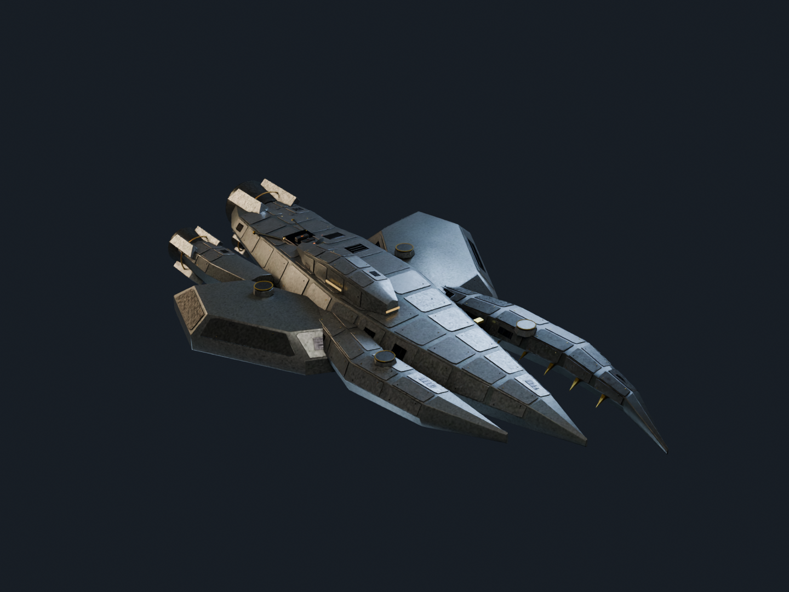

01 / Cinderwake Compact
Oathbreaker
A crew-built cutter with an unequal boarding bite, swept armoured shoulders, reclaimed ivory plates and protected offset drives. Its command blister and service cuts are part of the hull's faceted structure.
“You may buy the wreck. You may never own the mind inside it.”
The Compact is a chosen civilisation of fugitives, salvagers and pirates. Its crews oppose ownership of living minds while making their own uneasy bargains over ransom and stolen cargo.